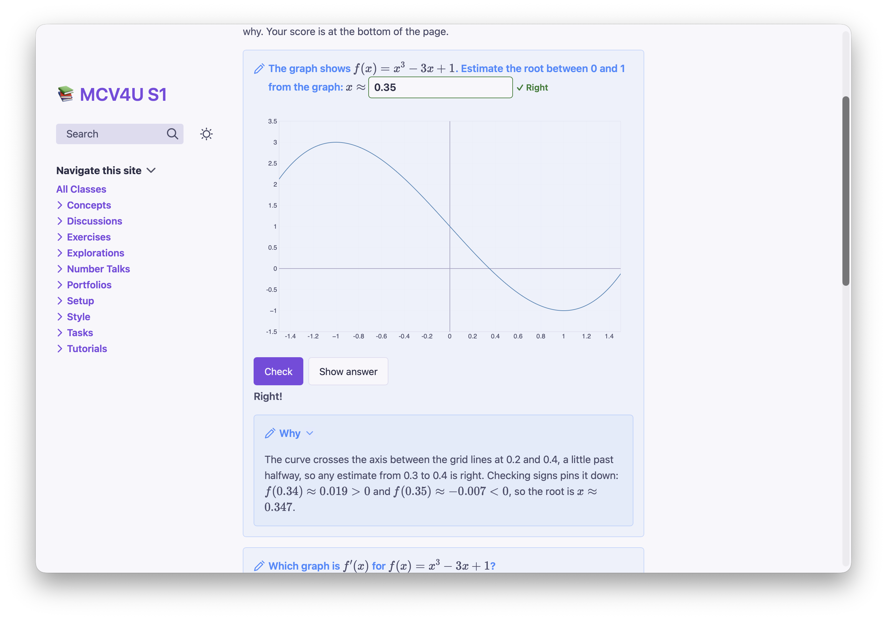
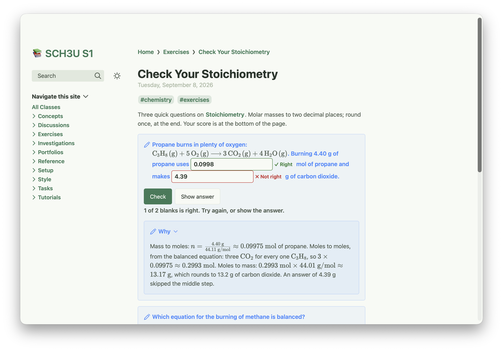
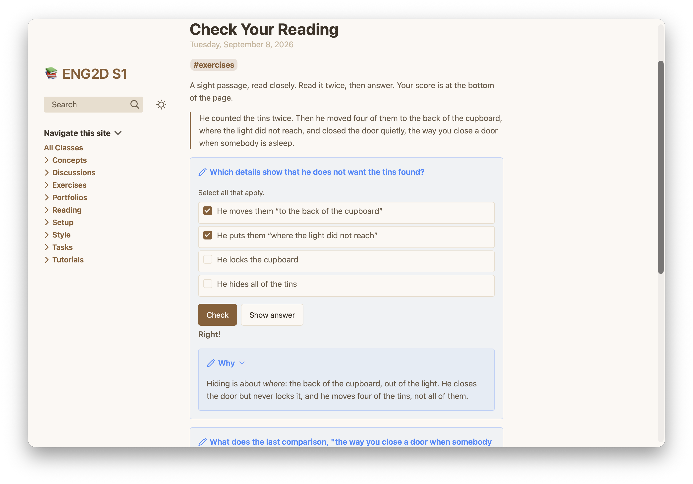
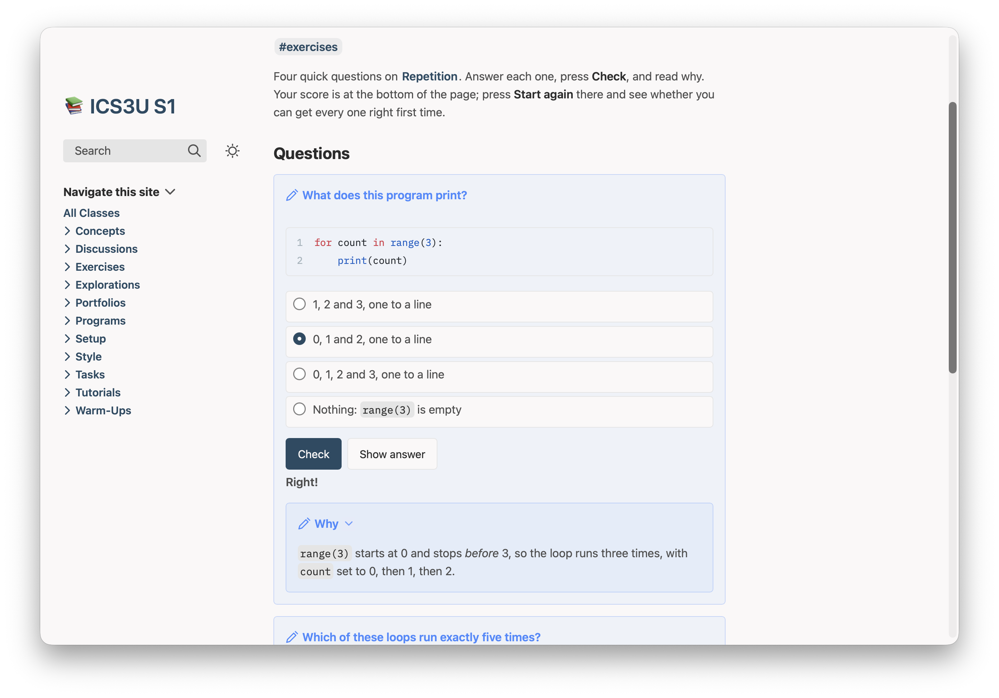
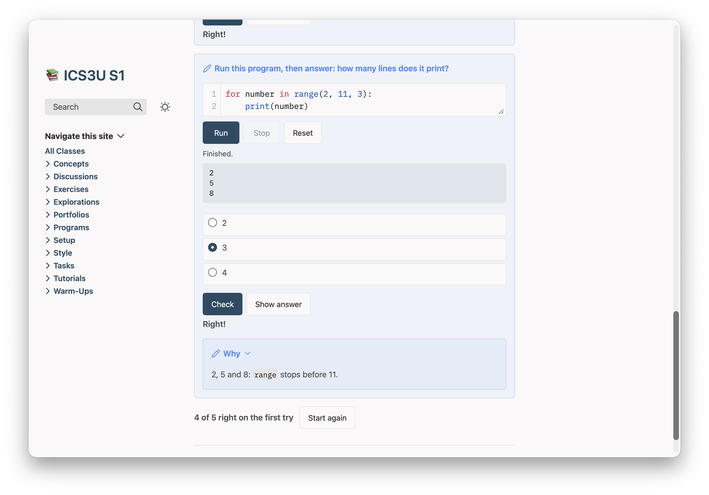

Quizzes
Questions students check for themselves, in any subject. They answer on the class website, see at once whether they were right and why, and try again. Their answers are never recorded or sent anywhere.
Assessment as learning
Growing Success describes assessment as learning: students monitor their own learning, use feedback to decide their next step, and set their own goals. A quiz on a Plantoir page gives students that feedback, and only to them. A student answers, presses Check, reads your explanation — right or wrong — and tries again. Each page keeps a score in the student's own browser, with Start again.
Nothing a student answers leaves their browser. You don't see it, Plantoir doesn't keep it, and it is never a mark.
Each example below is a page from a sample course, shown as students see it after they press Check. For mathematics and chemistry, the text you type is shown above the picture.
On the Mac. The Windows version gets this in a later release.
Mathematics: read the graph
A graph, a picture or a formula works in a question, a choice or an explanation. This one asks students to read a root off the graph of a cubic.
What you type
> [!quiz] The graph shows $f(x) = x^3 - 3x + 1$. Estimate the root between 0 and 1 from the graph: $x \approx$ `____`
> ```functionplot
> ---
> bounds: [-1.5, 1.5, -1.5, 3.5]
> alt: The cubic y = x^3 - 3x + 1, falling from a local maximum at (-1, 3) through a root between 0 and 1 to a local minimum at (1, -1)
> ---
> y = x^3 - 3x + 1
> ```
> > [!answer]-
> > 0.35 ± 0.06
>
> > [!explain]- Why
> > The curve crosses the axis between the grid lines at 0.2 and 0.4, a
> > little past halfway, so any estimate from 0.3 to 0.4 is right. Checking
> > signs pins it down: $f(0.34) \approx 0.019 > 0$ and
> > $f(0.35) \approx -0.007 < 0$, so the root is $x \approx 0.347$.What students get
The graph in the question, which students can drag, and a blank to type into. 0.35 ± 0.06 accepts anything from 0.29 to 0.41, so a fair reading of the graph is right, and the explanation shows how to pin the root down:

Chemistry: work it through
Reactions are written as you write them elsewhere on the site, \ce{…} and all. A question can have more than one blank, each with its own answer.
What you type
> [!quiz] Propane burns in plenty of oxygen: $\ce{C3H8(g) + 5O2(g) -> 3CO2(g) + 4H2O(g)}$. Burning 4.40 g of propane uses `____` mol of propane and makes `____` g of carbon dioxide.
> > [!answer]-
> > 0.0998 ± 0.0005
> > 13.2 ± 0.1
>
> > [!explain]- Why
> > Mass to moles: $n = \frac{4.40\ \text{g}}{44.11\ \text{g/mol}} \approx 0.09975\ \text{mol}$ of propane.
> > Moles to moles, from the balanced equation: three $\ce{CO2}$ for every
> > one $\ce{C3H8}$, so $3 \times 0.09975 \approx 0.2993\ \text{mol}$.
> > Moles to mass: $0.2993\ \text{mol} \times 44.01\ \text{g/mol} \approx 13.17\ \text{g}$,
> > which rounds to 13.2 g of carbon dioxide. An answer of 4.39 g skipped
> > the middle step.What students get
Each blank is marked on its own. A student who skips the mole ratio sees which number went wrong, and the explanation says why. Write the unit beside each blank, so students type only the number:

English: read the passage closely
The passage sits on the page above the questions, as it would on a test. Tick two or more choices and the question becomes select all that apply: a student is right only with every right choice and no other.

Computer science: read it, run it, then answer
Code in a question is highlighted as it is anywhere else on the site:

A program in a question can run on the page, Python or Swift (the page needs codeRunner: true; see Code). Students run it, read what it prints, and answer. After the last question comes the page's score, and Start again:

What it accepts
- Multiple choice: tick the right choice with
[x]. Tick two or more and it becomes select all that apply. - Short answer and fill in the blank: an
[!answer]callout inside the quiz, with each accepted answer separated by|. Write a blank as`____`. - Numbers are checked by value, so
0.5also accepts1/2;3.14 ± 0.01accepts anything in between. Capitals and extra spaces don't count against a student. [!explain]inside the quiz is shown after the student checks or shows the answer.[!quiz|shuffle]mixes the choices each time the page loads.- Graphs, pictures and runnable code work inside a question, a choice and an explanation.
Each page keeps a score in the student's browser — right on the first try — with Start again. On paper a quiz prints its questions only. In Obsidian you see it all, ticks and answers included: your answer key. A quiz that can't be checked shows its question with a line saying so, and Plantoir tells you the page and the line.
On the Mac. The Windows version gets this in a later release.
Or ask Claude or Codex
Plantoir writes its guidance for quizzes into your working folder, and keeps it up to date, so Claude Code or Codex started there already knows every kind of question and how answers are checked. There is nothing to install or paste.
Asked, in a working folder holding an MCV4U course, something like:
Add a 5-question check to the page "courses/MCV4U/Concepts/Curve Sketching.md".Claude Code, asked exactly that in a copy of the demo folder, read its quiz guidance and wrote five [!quiz] callouts of different kinds — multiple choice, select all that apply, short answer, two blanks to fill, and a choice between three graphs, shuffled — each with its answer and an explanation. Plantoir found nothing to fix in any of them.
Open either from a course's menu with Revise With ▸ Claude… or Codex…, which starts it in your working folder.